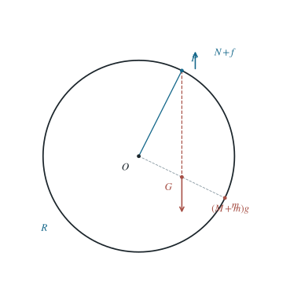

P0053 · 出版物习题 · 原书第 1.18 题
带配重圆环在粗糙钉上的任意接触平衡
总重力通过偏心重心，钉子反力的最大法线偏角由圆内点与圆周点的几何给出。
1 题目
1.1 物理情境
质量为 的大圆环上固定一质量为 的小球，圆环挂在一枚粗糙钉子上。可把圆环上除小球所在处外的任意物质点作为与钉子的接触点 。
1.2 物理过程
对每一个所选钉点，令圆环处于相应的静止方位；钉子通过法向支持力和沿圆环切线方向的静摩擦力支承整个体系。
1.3 已知参数和理想化假设
环均匀，半径为 ；。钉点可视为点接触，静摩擦满足 ，环和小球刚性连接。
1.4 求解目标
求保证圆环的所有允许钉点均能达到静力平衡所需的最小静摩擦系数 。

图中按 定位重心，并选择一组满足 的平衡方位。
2 思路与提示
沿圆环移动悬挂位置时，比较钉子反力与接触点法线的夹角；全环都可挂住要求每一点均满足摩擦角限制。
3 解答展开 / 收起
3.1 求复合体的重心
设环心为 、小球所在点为 。均匀环自身重心在 ，故复合体重心 沿 ，且
3.2 求某一钉点所需的摩擦比
平衡时重力合力 通过 竖直向下。关于钉点取矩要求 在同一竖直线上；选择悬挂方位时 在 下方，接触合力沿 指向 竖直向上。
钉子对圆环的支持法线沿从环心 指向接触点 的方向。设这两个向上方向的夹角为 ；它也等于三角形 在 处两条反向射线的夹角。
分解接触合力得
因而此钉点可平衡当且仅当 。
3.3 在所有钉点中取最大偏角
在三角形 中，边 对角 ，边 对角 。
正弦定理给 。因为 在大圆内部， 为锐角，正弦和正切都随它增大。
等号要求 ；过 作垂直于 的直线，它与半径 的圆有两个交点，所以等号确实可达。
这两个点都不同于小球位置 ，仍属允许钉点。故
将第（1）式代入并化简，得到必要且充分的下界
4 方法与讨论
静摩擦系数不是由最重处或最低处决定，而由全部接触点中接触合力偏离法线最严重的一处决定。若 ，重心回到环心，第（4）式趋于零；若 ，重心逼近环缘，所需摩擦系数发散。